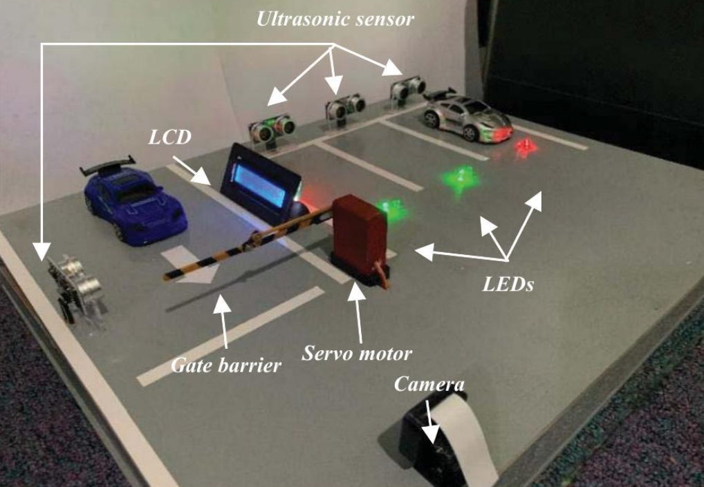
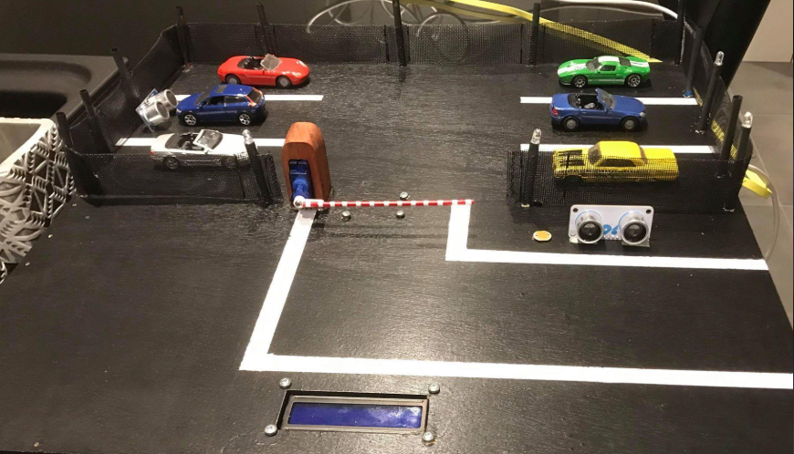
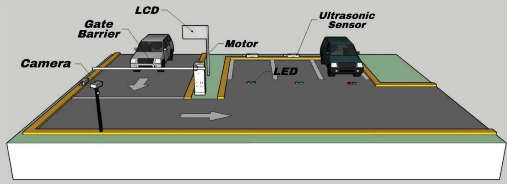
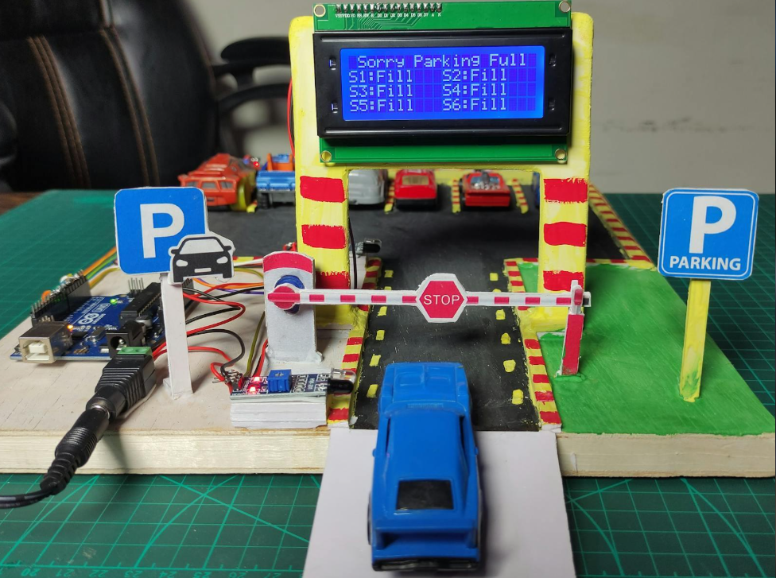

Number Plate Recognition
Capture vehicle images and use OCR to attempt automatic registration plate recognition.
VJAYA ROBOTICS PROJECT
RASPBERRY PI ROBOTICS PROJECTBuild an intelligent parking management system using Raspberry Pi 5 and Camera Module 3. Automatically capture vehicle images, recognize registration plates, monitor parking slots, operate entrance and exit barriers, and calculate parking fees.
Explore ProjectPROJECT OVERVIEW
The Smart Parking System uses a Raspberry Pi 5 as its main controller. A Raspberry Pi Camera Module 3 captures vehicle images when a vehicle approaches the entrance.
OpenCV processes the captured image, while Tesseract OCR attempts to recognize the vehicle registration number. The system checks the recognized number against its parking database.
IR sensors monitor the entrance, exit and individual parking spaces. SG90 servo motors operate the miniature entrance and exit barriers.
A Flask web dashboard displays parking availability, currently parked vehicles and parking information. An I2C LCD provides messages at the parking entrance.




WHAT IT CAN DO
Capture vehicle images and use OCR to attempt automatic registration plate recognition.
Control the entrance barrier using an SG90 servo after vehicle authorization.
Operate the exit barrier after checking the vehicle's parking record and exit process.
Monitor four individual parking spaces using IR sensors.
Calculate parking charges using the vehicle's recorded entry and exit times.
View parking availability and currently parked vehicles through a Flask dashboard.
Store vehicle records, parking slots, entry times and exit information.
Display vehicle information, parking availability and access messages.
Process captured vehicle images to locate possible number plate regions for OCR.
HARDWARE REQUIREMENTS
SOFTWARE REQUIREMENTS
The Python application is organized into separate modules for camera operation, image processing, number plate recognition, database management, parking sensors, servo gates, LCD display, fee calculation and the web dashboard.
HOW IT WORKS
HARDWARE CONNECTIONS
| Component | Component Pin | Raspberry Pi Connection |
|---|---|---|
| Entry SG90 Servo | Signal | GPIO 18 (BCM) |
| Exit SG90 Servo | Signal | GPIO 19 (BCM) |
| Entry IR Sensor | OUT | GPIO 23 (BCM) |
| Exit IR Sensor | OUT | GPIO 24 (BCM) |
| Parking Slot 1 | OUT | GPIO 5 (BCM) |
| Parking Slot 2 | OUT | GPIO 6 (BCM) |
| Parking Slot 3 | OUT | GPIO 12 (BCM) |
| Parking Slot 4 | OUT | GPIO 13 (BCM) |
| I2C LCD | SDA | GPIO 2 (SDA) |
| I2C LCD | SCL | GPIO 3 (SCL) |
| I2C LCD | VCC / GND | Suitable supply / Common GND |
| Camera Module 3 | Camera Connector | Raspberry Pi Camera Interface |
PARKING MANAGEMENT
| Parking Slot | GPIO Pin (BCM) | Purpose |
|---|---|---|
| P1 | GPIO 5 | Monitor Parking Slot 1 |
| P2 | GPIO 6 | Monitor Parking Slot 2 |
| P3 | GPIO 12 | Monitor Parking Slot 3 |
| P4 | GPIO 13 | Monitor Parking Slot 4 |
Each parking slot has an individual IR sensor. The parking manager uses sensor readings together with database records to determine slot availability.
ARTIFICIAL INTELLIGENCE
Camera Module 3 captures the vehicle image when the entry or exit process begins.
OpenCV resizes, enhances and processes the captured image.
The image processor searches for possible rectangular number plate regions.
Tesseract OCR attempts to extract characters from the plate image.
The extracted text is cleaned and checked against the configured registration format.
The system checks whether the recognized vehicle has a valid parking record.
PROGRAM STRUCTURE
Main application controller.
GPIO pins, camera settings and project configuration.
Camera Module 3 initialization and image capture.
Vehicle motion detection and image capture coordination.
Image enhancement and possible number plate region extraction.
Number plate OCR and text validation.
SQLite vehicle and parking record management.
Parking slot allocation and availability management.
Entry, exit and parking slot IR sensor management.
Entrance SG90 servo barrier controller.
Exit SG90 servo barrier controller.
16×2 I2C LCD display controller.
Parking duration and fee calculation.
Flask web-based parking dashboard.
Python dependencies required by the project.
PROGRAMMING
Download the individual Python files and requirements for the Smart Parking System.
main.py
Download Code ↓ 📄config.py
Download Code ↓ 📄camera.py
Download Code ↓ 📄vehicle_detection.py
Download Code ↓ 📄image_processing.py
Download Code ↓ 📄plate_recognition.py
Download Code ↓ 📄database.py
Download Code ↓ 📄parking_manager.py
Download Code ↓ 📄sensors.py
Download Code ↓ 📄entry_gate.py
Download Code ↓ 📄exit_gate.py
Download Code ↓ 📄lcd_display.py
Download Code ↓ 📄fee_calculator.py
Download Code ↓ 📄dashboard.py
Download Code ↓ 📄requirements.txt
Download Code ↓PROJECT DEMONSTRATION
Smart Parking System Demonstration
Add your actual parking model photograph or demonstration video here.IMPORTANT INFORMATION